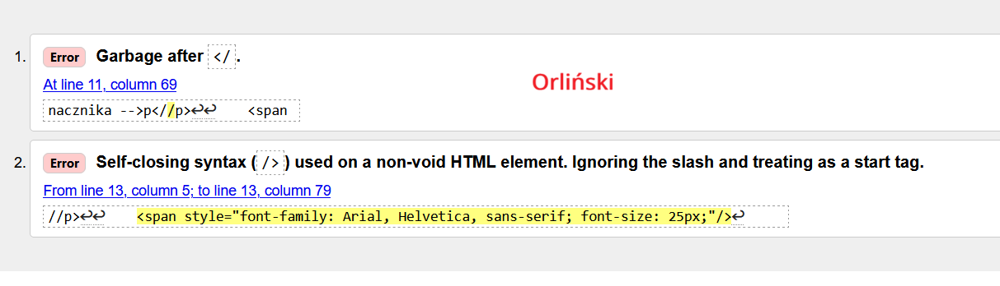
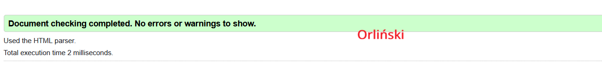

Co to jest walidacja?
Program (może być aplikacja Web, czyli strona WWW) sprawdzający poprawność
dokumentu o określonej składni.
rodzaje walidacji
- walidator kodu HTML
- walidator kodu CSS
Co umie wskazać walidator
- przyczynę błędu
- miejsce błędu

